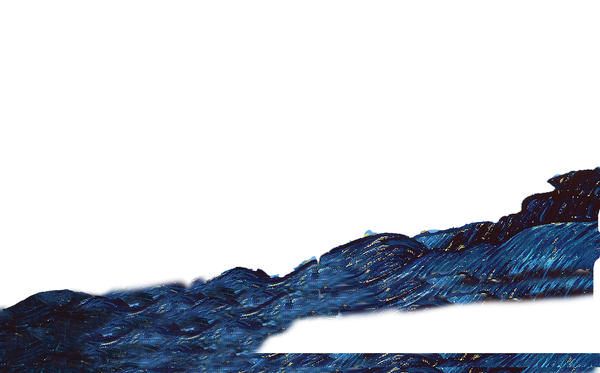
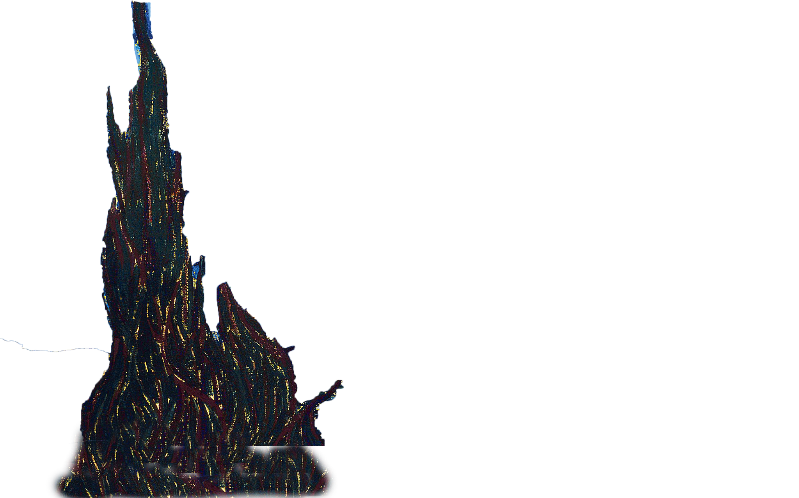

Parallax.js
Using Parallax to create a 3d environment
Parallax was all the rage over the web for a few years. It has been used extensively in the gaming industry before it was created for use on the web. Effectively how it works is by creating multiple layers that sit on top of each other but move at different speeds creating the illusion of 3d perspective. In this tutorial the parallax effect will be triggered when the mose enters the image. Other parallax plugins (such as jarallax.js) are triggered when the mouse wheel is scrolled down. In combination with CSS3 Animations you can create a very impressive effect with scolling parallax, but that is for another tutorial. Here i will demonstrate the mouse triggered effect I created using Vincent Van Gogh's A Starry Night.
Get the Script
The parallax script can be downloaded from GitHub:
Wagerfield/parallax
The Demo is here:
Demo
Once downloaded place the parallax.min.js script before the closing body tag. Here you can also
initialize the script with:
/*Jarallax*/
$(document).ready(function() {
var scene = document.getElementById('scene');
var parallax = new Parallax(scene);
}); Create Layers in Photoshop
Choosing A Starry Night, an impressionist painting, was no accident. As you will see the image needs to be cut up into different layers; from background to foreground. It seemed to me there where four distinct sections in the painting. The nightmarish spiral that is the castle was in the far foreground. Just behind the castle was the village to the right. Behind that were the mountains, and in the far background the sky. Once cut up and in their own layers, each image is saved as a png and saved in your images folder.
HTML Code
Place the images within the unordered list as follows, where layer1 will be the far background image and layer 4 the far foreground. The date depth class will govern the speed at which the images will move.
<ul id="scene">
<li class="layer" data-depth="0.20"><img src="layer1.png"></li>
<li class="layer" data-depth="0.40"><img src="layer2.png"></li>
<li class="layer" data-depth="0.60"><img src="layer3.png"></li>
<li class="layer" data-depth="0.90"><img src="layer4.png"></li>
</ul>
The CSS
When placing the images gaps appear behind those images in the foreground. These exist as there is nothing actually behind these images. The solution I used was to use the Clone Stamp Tool in photoshop to copy elements of the sky or cliffs, or whatever looked good into those gaps. This doesn't look too bad unless you were to look really close in which case you would spot those extra bits. Because this is an impressionist painting this kind of technique works. Now if you look at the effect in the browser there will be gaps at the edges of the painting as the images move around. By adding a negative margin, increasing the size of the image to 110%, and by setting overflow to hidden the edges will disappear beyond its containing element.
/*Jarallax Styles*/
ul#scene {
margin: 8% auto;
border: 2px solid #333;
overflow: hidden;
}
ul#scene li img {
margin: -5%;
min-width: 110%; /*Increases width beyound containing element to eliminate gaps*/
}
Result

- 
- 
Another Parallax Technique
I came across recently another interesting use of parallax from one of my favourite paintings: Valesque's Las Mininas using only CSS3!.